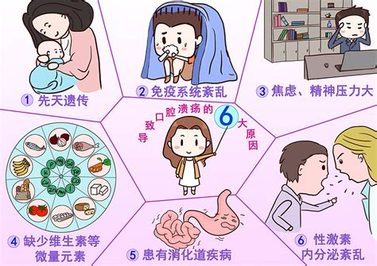
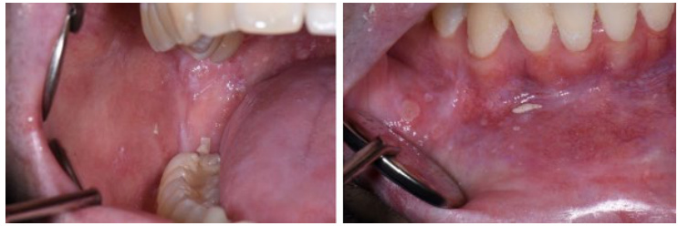

口腔溃疡
危险程度
中风险
就医建议
如果口腔溃疡反复发作，如每月发作两次以上，或者溃疡面积较大、疼痛明显且超过两周未愈合，应尽快就医
最佳就医时间
口腔溃疡视诊出现症状时，通常为一周左右
什么是口腔溃疡？
口腔溃疡是一种常见的口腔疾病，通常表现为口腔内出现一个或多个浅表性溃疡，常见于唇、颊黏膜、舌缘、牙龈等部位。
关键特征：
- 疼痛
- 圆形或椭圆形的溃疡
- 周期性与复发性
- 具有自限性
口腔溃疡分类
复发性口腔溃疡
最常见的类型，通常表现为反复发作的浅表性溃疡
创伤性口腔溃疡
物理或化学刺激引起，如咬伤、烫伤、刷牙过度等，表现为局部黏膜损伤后的溃疡
白塞病相关溃疡
一种全身性疾病，除了口腔溃疡外，还可能累及其他器官如皮肤、生殖器和眼睛
其他疾病相关溃疡
如口腔结核性溃疡、恶性肿瘤引起的溃疡等
图示说明：
图1：口腔溃疡发病机制示意图

上图展示了口腔溃疡的发病机制
图2：正常口腔与口腔溃疡对比图

上图展示了正常口腔与口腔溃疡的对比
主要症状
常见症状
疼痛
表现为灼痛、刺痛或烧灼感
溃疡面特征
口腔溃疡通常为圆形或椭圆形，中央凹陷，边缘清晰，表面覆盖灰白色或黄色假膜，周围组织红肿
溃疡形态
溃疡可单发或多发，常见于唇内侧、颊黏膜、舌缘、牙龈等部位
伴随症状
部分患者可能出现低热、乏力、头痛、淋巴结肿大等
分类
轻型溃疡
单发或多发小溃疡，直径小于5毫米，愈合较快
重型溃疡
单发大而深的溃疡，直径可达10-30毫米，愈合后可能留瘢痕
疱疹样溃疡
多发小溃疡，直径小于2毫米，分布广泛，形似"满天星"
治疗方法
药物治疗
- 维生素B2
- 维生素C
- 抗生素或免疫调节剂
局部用药
- 口腔溃疡贴片
- 喷雾剂
- 凝胶
物理疗法
- 温盐水漱口或淡盐水漱口
- 针灸治疗